扉页
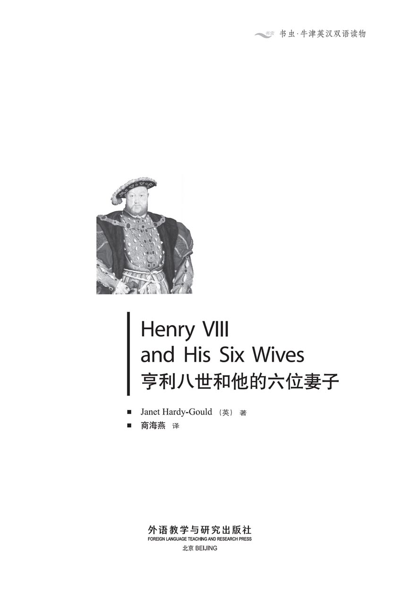
版权页
京权图字：01-2002-6589
Originally published by Oxford University Press, Great Clarendon Street, Oxford © 2000 This Edition is licensed for sale in the People's Republic of China only and not for export therefrom
'Oxford' is a registered trademark of Oxford University Press
只限中华人民共和国境内销售，不包括香港特别行政区、澳门特别行政区及台湾省。不得出口。
图书在版编目（CIP）数据
亨利八世和他的六位妻子：英汉对照／（英）哈迪-古尔德（Hardy-Gould, J.）著；商海燕译．—北京：外语教学与研究出版社，2003.10（2013.12 重印）
（书虫·牛津英汉双语读物）
ISBN 978-7-5600-3684-7
Ⅰ．亨… Ⅱ．①哈… ②商… Ⅲ．英语—对照读物，小说—英、汉 Ⅳ．H319.4：I
中国版本图书馆CIP数据核字（2003）第076643号
出版人： 蔡剑峰
责任编辑：易 璐
封面设计：李 萌
出版发行：外语教学与研究出版社
社 址：北京市西三环北路19号（100089）
网 址：http://www.fltrp.com
版 次：2003年10月第1版
书 号：ISBN 978-7-5600-3684-7
* * *
制售盗版必究 举报查实奖励
版权保护举报电话：（010）88817519
内容简介
内容简介
英格兰国王亨利八世因为很多事情而出名，但他也因有六个妻子而闻名于世。他不是个好丈夫。人们说，当他挑选新妻子时，父亲们都会小心地带着女儿远离王宫。他们都不愿意让国王选中他们的女儿当下一任王后，因为他的几位王后都很短命，而且都很不幸。
为什么亨利国王会和两位妻子离婚，又杀死了另两个呢？他的王后们到底是什么样子呢？
他的第六位妻子凯瑟琳·帕尔在国王去世后依然健在。一天她回到了白厅的王宫，发现了一个装着旧信的盒子，这些信都是写给国王的——他的前五位妻子每人一封。她坐下来把信念给自己年轻的侍女玛格丽特听。第一封信来自西班牙国王的女儿，阿拉贡的凯瑟琳，她和亨利做了24年的夫妻。她孤独地郁郁而终，没有一个朋友……
HENRY Ⅷ AND HIS SIX WIVES
HENRY Ⅷ
AND HIS SIX WIVES
King Henry the Eighth of England was famous for many things, but he was also famous because he had six wives. He was not a kind husband. People say that when he was looking for a new wife, careful fathers took their daughters away from the palace. They did not want the King to choose their daughter to be the next Queen, because some of his Queens had very short and unhappy lives.
Why did King Henry divorce two wives, and kill two others? What were his queens really like?
Catherine Parr, the sixth wife, lived on after the King's death. One day she goes back to the palace of Whitehall and finds a box of old letters written to the King—one from each of the first five wives. She sits down to read them to her young maid, Margaret. The first letter is from the daughter of the King of Spain, Katherine of Aragon, who was Henry's wife for twenty-four years. She died alone and sad and friendless...
目录
1. King Henry is dead
1
King Henry is dead
My name is Catherine Parr. A month ago I was the Queen of England, the wife of King Henry the Eighth. Henry died and we buried him last week in St George's Church, Windsor. Two days ago, on 16th February 1547, I went back to the palace of Whitehall, which was once my home. I wanted to take my letters and books and bring them back to my house.
Margaret, my new maid, came to the palace with me. She's very young and doesn't know a lot about the world. She has only just come up to London from her home in Somerset. Perhaps I was like her when I was twelve. I, too, was always asking questions and wanting answers immediately.
When we arrived at the palace, it was cold and dark. We walked into Henry's room. I sat down in one of Henry's large chairs in front of his wooden writing desk and looked at the pictures around the room. Next to me there was a big picture of Henry, when he was young. He was very handsome then, not like the fat old man he was later. I thought his blue eyes were watching me. I turned to Margaret and said:
'You see that picture of the King? That's what he was like when he was young—tall and strong and handsome. People say that he never got tired. He could go out riding all day, changing his horses nine or ten times, and then he could dance all night. He was clever, too; he could speak five languages. Will people remember him like that, or will they only remember him because he had six wives?'
'Did he really have so many wives?' said Margaret.
'Yes, of course. I thought that everyone knew that.'
Margaret looked away and said, 'We didn't get much news from London at home, and my family's house is a long way from the nearest village.'
'It doesn't matter,' I said, smiling. 'One day, I'll tell you the story of my husband Henry's life.'
On the desk in front of me there was a wooden box with a large gold H on the top. I opened it slowly and took out some old letters. Each letter was in different writing and some of them were old and yellow. One letter had a picture of a large bird on it. It was from Henry's second wife, Anne Boleyn.
'Margaret!' I said. 'I've found some letters from Henry's other wives. There's also a beautiful gold necklace and a small piece of hair.' I looked at another letter. 'Here's one old letter from his first wife, Katherine of Aragon. She was married to him for a very long time.'
'She only had one child, didn't she?' said Margaret.
'Yes, only Princess Mary is still alive. There were five other children, but they were all born too early and died.'
Again I looked at the letter with the picture of the bird on it. 'Have you heard of Anne Boleyn, Margaret?'
'Yes, my mother talked about her. She said she was a very bad woman.'
'Well, that's what some people say. Anne was the mother of Henry's second daughter, Princess Elizabeth. Look,' I said. 'This one is from Katherine Howard, Henry's fifth wife. Both Anne and Katherine were beheaded in that terrible prison, the Tower of London.'
'Why did the King send them to their deaths?' asked Margaret. She looked afraid.
'They had many enemies, who told the King that they had lovers. Perhaps the stories were true, I don't know. But the King believed them.'
I looked at another letter. 'This one is from Jane Seymour. She was the third wife and the mother of Henry's only living son. He is now our King, Edward the Sixth.'
'Was Jane Seymour beheaded too?' asked Margaret.
'No, poor Queen Jane died soon after Edward was born.'
I looked at the last, short letter. 'Look, a letter from Anne of Cleves, Henry's fourth wife.'
'Did she have any children?' asked Margaret.
'No,' I laughed. 'Henry thought that Anne was very ugly and he didn't want her to be the mother of his children.'
Margaret was silent. Then she said, 'King Henry sounds like a terrible husband.'
'He wasn't all bad, Margaret. There were good times, too. He was clever at so many things—horse-riding and tennis, writing and playing music. He wrote many beautiful songs, and he had a wonderful singing voice. But it's true that he wasn't very kind to his wives.'
Margaret looked at the box. 'So why did he keep these letters from them?' she asked.
'Oh, you ask so many questions, Margaret! I don't know. Perhaps each letter says something important.'
I looked up and saw that it was nearly dark. It was time to go home to Chelsea Manor. I put the letters back inside the box.
'Come, Margaret, we must go now.'
'But can't we read the letters?' she asked.
'We'll take them with us and read them tomorrow.'
come up to come to one place from another. 从一地来到另一地。
immediately adv. at once, without delay. 立刻，马上；当即，毫不耽搁。
handsome adj. (of man) goodlooking. （指男子）漂亮的，英俊的。
matter v. (used esp. in negative sentences and questions; in sentences containing what, who, where, if, etc., usu. with it as the subject) be important. （尤用于否定句和疑问句；句中含what, who, where, if 等词，通常以it作主语）关系重大，要紧。
different adj. not the same (as sb. or sth.). 不同的。
necklace n. ornament of pearls, beads, etc. worn round the neck. 项链。
hear of be told about or have knowledge of sb./ sth. 听到或知道某人/某事物的情况。
behead v. cut off the head of (sb.), esp. as a punishment. 砍（某人）的头（尤指刑罚）。
terrible adj. causing great fear or distress. 可怕的。
the Tower of London 伦敦塔，伦敦著名古迹，位于塔桥附近，南临泰晤士河，建于11世纪末。这座古老的宫殿曾做过王宫、堡垒、档案馆和监狱。
sound v. give a specific impression when heard. 听起来，似乎。
wonderful adj. very good or admirable. 极好的。
it is time to (do sth.) 是……的时候了，该做……了。
亨利国王去世
1．亨利国王去世
我叫凯瑟琳·帕尔。一个月前我还是英格兰的王后，国王亨利八世的妻子。亨利去世了，我们上周在温莎的圣乔治教堂埋葬了他。两天前，也就是1547年2月l6日，我回到了白厅的王宫，这儿曾经是我的家。我想拿走我的信件和书籍，把它们带回我的家。
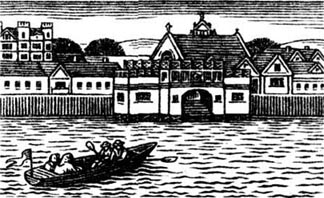
我的新侍女玛格丽特和我一起来到王宫。她非常年轻，不谙世事。她刚从她的家乡萨默塞特来到伦敦。我12岁时可能也和她一样，总爱问问题并总想马上知道答案。
到达王宫时，那里又冷又暗。我们走进了亨利的房间。我在他那木制写字台前的一把大椅子上坐了下来，环视着屋里的画。我旁边是一张亨利年轻时的大幅画像。那时他非常英俊，不像后来那样又老又胖。我觉得，他的蓝眼睛正注视着我。我转向玛格丽特说：
“你看到国王的那幅画像了吧？那是他年轻时的样子——高大，强壮，而且英俊。人们说他永远不会疲倦。他能整天在外骑马，换九到十次马，然后还能整夜跳舞。他也非常聪明，会说五种语言。但人们会因为他是这样一个人而记住他，还是仅仅因为他有过六个妻子而记住他呢？”
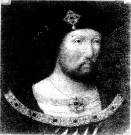
“他真有那么多妻子吗？”玛格丽特说。
“是的，当然。我想大家都知道。”
玛格丽特望着远处说道：“我们在家时对伦敦的消息知道得并不多，我家离最近的村子也有很长一段路。”
“不要紧，”我笑着说，“有一天我会把我丈夫亨利一生的故事全告诉你的。”
我面前的桌子上有一个木盒子，上面有一个巨大的金字“H”。我慢慢地打开它，取出了几封旧信。每封信的字迹都不相同，有些已经旧得发黄了。其中一封信上画着一只大鸟，那是亨利的第二任妻子安妮·博伦写来的。
“玛格丽特！”我说，“我发现了亨利其他妻子们写的一些信件，还有一条美丽的金项链和一绺头发。”我看了看另外一封信，“这儿有他的第一任妻子阿拉贡的凯瑟琳写的一封信。他们的婚姻维持了很长一段时间。”
“她只有一个孩子，是吧？”玛格丽特说道。
“是的，只有玛丽公主还活着。她还生过五个孩子，但都是早产，全都夭折了。”
我又看了看那封画着鸟的信。“你听说过安妮·博伦吗，玛格丽特？”
“是的，我妈妈说起过她，说她是个很坏的女人。”
“啊，有些人是那么说的。安妮是亨利的第二个女儿伊丽莎白公主的母亲。看，”我说，“这一封信是凯瑟琳·霍华德，也就是亨利的第五任妻子写的。安妮和凯瑟琳都是在伦敦塔那个可怕的监狱里被砍头的。”
“国王为什么要处死她们呢？”玛格丽特问道。她看起来很害怕。
“她们有很多敌人，这些人跟国王说她们有情人。那些故事也许是真的，我不知道。但是国王相信他们的话。”
我看了看另一封信。“这封是简·西摩写的。她是亨利的第三任妻子，也是亨利唯一尚在人世的儿子的母亲。他现在是我们的国王，爱德华六世。”
“简·西摩也是被砍头的吗？”玛格丽特问。
“不，可怜的王后简在爱德华出生后不久就去世了。”
我看到最后一封短信。“看，这封信是克利夫斯的安妮写来的，她是亨利的第四任妻子。”
“她有孩子吗？”玛格丽特问道。
“没有，”我大笑，“亨利认为安妮太丑了，不想让她做他孩子的母亲。”
玛格丽特沉默了。然后她说：“亨利国王听起来像是个很可怕的丈夫。”
“他并非一无是处，玛格丽特。他也有好的时候。他擅长的东西很多——比如骑马、打网球、写作以及演奏音乐。他写过很多优美的歌曲，还有一副动人的歌喉。不过他的确对妻子们不太好。”
玛格丽特看着盒子。“那他为什么还保留着她们的信呢？”她问。
“哦，你问的问题太多了，玛格丽特！我不知道。也许每封信都写了些重要的事情吧。”
我抬头看了看，天差不多黑了。我的家在切尔西庄园，现在该回去了。我把信放回盒子里。
“来，玛格丽特，我们现在得走了。”
“但是我们不能读这些信吗？”她问。
“我们要把它们带回去，明天再读。”
2. Katherine of Aragon
2
Katherine of Aragon
We got up early the next morning and went to my favourite room. It has a wonderful view of the large gardens and the River Thames at the bottom.
'Did you sleep well, Margaret?' I asked.
'No. I dreamed that King Henry came back to life and sent me to the Tower of London.'
'Why did he do that?'
'Because in my dream I read the letters and he was angry with me. Perhaps it will be bad luck if we read them,' said Margaret, worried.
'Don't worry,' I said. 'It was only a dream. He can't do anything now. He's dead.'
I went over to the wooden box and opened it. 'We'll read the letter from Katherine of Aragon first,' I said.
'She was Spanish, wasn't she?' said Margaret.
'Yes, she first came over to England to marry Henry's brother Arthur, but he died. She then married Henry and was his wife and queen for twenty-four years.'
'What a long time! What happened to her? Did she go to the Tower of London too?'
'No, Henry divorced Katherine because he wanted a son, and she only gave him a daughter, Princess Mary. Years before, Katherine did have a son—Henry, Prince of Wales, but he died when he was only seven weeks old. The King wanted a son very much. He was in love with Anne Boleyn, but he also wanted a new wife—a younger woman to give him sons.'
'Poor Katherine! Divorced after twenty-four years for a younger woman!' Margaret looked at the letter in my hand. 'Can we read the letter now, my lady?'
'Yes, let's sit down by the window and read it together.'
'But I can't read,' said Margaret, looking at the floor.
'That's all right, I'll read it for you.'
We sat down and I began to read it slowly...
Windsor
28th July 1531
Dear Henry
When you left Windsor last week, you didn't say goodbye. I feel lonely and unhappy without you. When will I see you again? Please come back soon.
You know that I am your true wife. We have been married for more than twenty years in the eyes of God. I have given you a daughter, Princess Mary. God took from us our other children. I wanted so much to give you a son, but God's plan for us was different, and we cannot change that.
I pray for you every day and ask for you to come back to me. I have never been untrue to you, Henry, and have always been a good wife, and a good mother to our daughter.
I am still your Queen. There is only one Queen of England, and that is me. I know that you are with Anne Boleyn, but you will never be happy with her. I am the daughter of a King, and she is not. You must not divorce me. The Pope and the Catholic Church will never agree to this. I am sending you a necklace with a gold cross. Henry, when you look at it, remember me and remember the Catholic Church.
Your Queen
Katherine of Aragon
'So what happened to Katherine?' asked Margaret. 'Did she ever see the King again?'
'No, never. He divorced her. She lived a lonely life with only a few friends, and died a broken and unhappy woman about ten years ago.'
'What about the Catholic Church? Did the Pope agree to the divorce?'
'No, he didn't. So Henry broke with the Pope and the Catholic Church, and that's how the Church of England began. The King became Head of the Church, and the Pope and the Catholics were very angry. It made a lot of trouble both in England and Europe.'
'And all because of Anne Boleyn?' said Margaret.
'Not only that. You see, it was very important for the King to have a son, to be King after him. There has only ever been one Queen in England, and that was a terrible time, with a lot of fighting and killing. Henry didn't want that to happen again after his death. So he knew that he must have a son, not just daughters. And that's really why he divorced Katherine and married again.'
'And was he sad when Katherine died?'
'Sad? Oh no! He dressed in yellow and danced all night with his new Queen.'
Margaret looked inside the box and found the gold necklace. She held it to her neck. 'Poor Katherine,' she said softly. 'King Henry was a terrible husband to her.'
favourite adj. best liked. 最喜欢的。
view n. state of seeing or being seen from a particular place; field of vision. 视野。
luck n. chance, esp. thought of as force that brings good or bad fortune. 运气，造化。
divorce v. legally end one's marriage to (sb.). 与（某人）离婚。
that's all right it doesn't matter. 没关系。
pray for offer thanks, make requests. 祈祷，祷告。
untrue (to sb.) adj. not loyal. 不忠实的。
agree (to sth.) say 'yes'; consent (to sth.). 同意，答应。
break with (sb.) end a relationship with (sb.). 与（某人）绝交。
dress in (sth.) wearing sth. 穿某物。
阿拉贡的凯瑟琳
2．阿拉贡的凯瑟琳
第二天早晨，我们起得很早，来到我最喜欢的房间。这间房子外面的风景很美，有几座很大的花园，远处是泰晤士河。
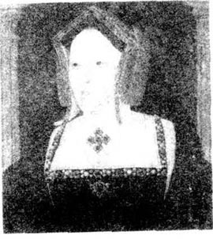
“你睡得好吗，玛格丽特？”我问道。
“不好。我梦到亨利国王复活了，把我送进了伦敦塔。”
“他为什么会那样做呢？”
“因为我梦到我看了那些信，他很生气。可能我们读了那些信会倒霉的。”玛格丽特忧心忡忡地说。
“别担心”，我说，“那只是个梦。他现在什么也做不了，他已经死了。”
我走到木盒子前，把它打开。“我们还是从阿拉贡的凯瑟琳的信读起吧。”我说。
“她是个西班牙人，对吧？”玛格丽特问。
“是的，她刚来英格兰时嫁的是亨利的哥哥亚瑟，但是他死了。她随后又嫁给了亨利，给他做了24年的妻子和王后。”
“时间真长啊！她后来怎么样了？她也被关进伦敦塔了吗？”
“没有，亨利和凯瑟琳离婚了，因为他想要个儿子，而她只给他生了个女儿，就是玛丽公主。多年前，凯瑟琳的确生了一个儿子——就是亨利，威尔士王子，但他生下来刚七个星期就夭折了。国王非常想要个儿子。他爱上了安妮·博伦，但他也想要个新妻子——一个更年轻的女人给他生儿子。”
“可怜的凯瑟琳！因为一个比她年轻的女人，居然在结婚24年后被抛弃！”玛格丽特看着我手中的信，“我们现在可以读这封信吗，夫人？”
“可以，我们坐到窗边一起读吧。”
“但是我不识字。”玛格丽特看着地板说。
“好吧，我来给你读。”
我们坐了下来，我开始慢慢读信……
温莎宫
1531年7月28日
亲爱的亨利：
你上周离开温莎时，没有向我道别。没有你，我感到既孤独又伤心。我何时才能再见到你呢？请快回来吧。
你知道我是你忠实的妻子。我们结婚已经20多年了，有上帝做见证。我为你生了一个女儿，玛丽公主。上帝带走了我们其他的孩子。我多么想再给你生个儿子啊，但是上帝给我们的安排是不同的，而且我们无法改变。
我每天为你祈祷，盼望你能回到我的身边。我从未背叛过你，亨利。我一直是个好妻子，我们女儿的好母亲。
我仍然是你的王后。英格兰只有一个王后，那就是我。我知道你和安妮·博伦在一起，但是你和她在一起是绝不会幸福的。我是一位国王的女儿，而她不是。你不能和我离婚，教皇和天主教会永远都不会同意这件事的。我送给你这条带有金十字架的项链。亨利，当你看着它时，就请记住我，记住天主教会。
你的王后
阿拉贡的凯瑟琳
“那么凯瑟琳怎么样了？”玛格丽特问，“她后来又见到过国王吗？”
“没有，再也没有。他和她离婚了。她一直孤独地生活着，身边仅有几个朋友。大约十年前，她身心俱焚，郁郁而终。”
“那么天主教会呢？教皇同意他们离婚吗？”
“不，他不同意。所以亨利与教皇和天主教会决裂了，英格兰国教就是这样创建的。国王成了教会的领袖，教皇和天主教会非常愤怒。这在英格兰乃至整个欧洲都引起了轩然大波。”
“这都是因为安妮·博伦吗？”玛格丽特问。
“不仅仅因为她。你知道，对于国王来说，有个儿子非常重要，儿子可以继承他的王位。在英格兰只有过一位女王，那是个可怕的年代，到处是争斗和杀戮。亨利不想在他死后再发生这样的事情。所以，他知道他一定得有个儿子，而不能只有女儿。那才是他和凯瑟琳离婚并再娶的真正原因。”
“凯瑟琳去世的时候他伤心吗？”
“伤心？哦不！他穿着黄色的衣服和新王后整夜跳舞。”
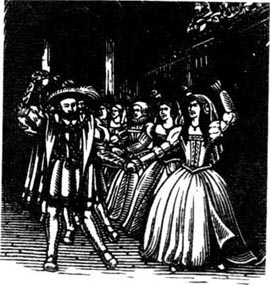
玛格丽特朝盒子里看了看，发现了那条金项链。她拿着项链在自己的脖子上比试着。“可怜的凯瑟琳，”她轻声说，“亨利国王对她来说真是个可怕的丈夫。”
3. Anne Boleyn
3
Anne Boleyn
Margaret carefully put the necklace back into the box, then looked at me.
'So then the King married Anne Boleyn,' she said. 'Was Anne very special? Was she really very beautiful?'
'Some people say that she was, and others say that she wasn't. But she had beautiful long black hair, and the most wonderful black eyes. When men looked into her eyes, they fell in love with her.'
'Tell me more about her,' said Margaret.
'Well, Henry was in love with her for about seven years before they married.'
'Seven years!'
'Yes, it took a long time to divorce Katherine, and Anne wanted to marry the King and be his Queen. She didn't want to be just his mistress, like the other girls.'
'Did the King have a lot of mistresses?' asked Margaret. Her eyes were round with interest.
'Oh yes,' I said, smiling. 'Kings can do what they like, you know. But people say that Anne was very clever. She said no to the King, again and again, and so he had to marry her to get what he wanted.'
'And how long were they married?'
'Less than three and a half years.'
'Is that all?' said Margaret. 'King Henry broke with the Pope to marry Anne, and they were only married for three and a half years!'
'Yes, Henry soon became tired of her. He wanted a son, but she only gave him a daughter, Princess Elizabeth. She nearly had another baby, but she had a miscarriage after only a few months. They could see that it was a boy. Henry was very, very angry, and three months later Anne was in the Tower of London. Henry was already interested in Jane Seymour, you see.'
'So poor Anne went to the Tower because she didn't give the King a son?'
'Well, there were other things. Anne was a strong and sometimes difficult woman. She talked a lot. She liked to tell Henry what to do. In the end Henry became bored of this. Remember, he was the King of England.'
'Did she really have lovers?'
'Well, some people say—'
Just then there was a noise outside. I looked out of the window and saw a man on a horse. He had grey hair and was wearing fine clothes. It was my Uncle William. A minute later he came into the room.
'Hello,' I said, kissing him. 'I'm so pleased to see you.'
'Dear Catherine,' he said. 'It's wonderful to see you, too. And who is this?' he said, turning to Margaret.
'I'm Margaret, my lady's new maid.'
'I'm very pleased to meet you,' he said, smiling. 'So,' he went on, 'what's the news?'
'Oh, we were just talking about Anne Boleyn,' I said.
'That black-eyed witch!' said Uncle William.
'Was she really a witch?' asked Margaret.
'Well, she was a strange woman,' said Uncle William. 'She had six fingers on one hand. I saw them myself. Witches always have six fingers. Anne Boleyn was a wild and dangerous woman—but men liked her.'
'So she did have lovers, then?' said Margaret.
'Of course she did!' said Uncle William. 'There were five of them—all wild young men. They were all beheaded before the witch, and a good thing too!'
'Oh, Uncle,' I said, 'how can we be sure that they were all her lovers? One of them was her brother!'
'Well, perhaps he wasn't her lover,' said Uncle William. 'But I remember all those wild parties in the Queen's rooms. There was dancing and laughing all night sometimes. She was a bad woman, I'm sure of it.'
'I think that Henry believed the stories about Anne because he wanted another wife,' I said. 'A wife to give him a son.'
Little Margaret was listening to us with great interest. 'So nobody was sorry when Anne died?' she said.
'No, many people were pleased,' said Uncle William. 'She had a lot of enemies.' then he looked at both of us. 'But why are you talking about Anne Boleyn? That's very old news.'
'I found this old box of Henry's at Whitehall Palace,' I said. 'Inside there were letters from each of Henry's wives, and Margaret wanted to know all about them.'
'Where's the one from Anne Boleyn?' said Uncle William. He opened the box on the table. 'I want to read what she wrote to her dear husband. Ah, here it is. 18th May 1536—that's the day before she was beheaded.'
He began to read the letter aloud...
Tower of London
18th May 1536
Dear Henry
This is my last letter to you. Tomorrow I am going to die. When you open this letter and read it, I will be dead and buried.
During the last few weeks my life has been very hard. I have been very afraid and very lonely. I have walked around my room, thinking of you. I wanted you to take me away from this terrible prison. But now I know that I am going to die, I feel calm.
They tell me that you have spoken angry words about me. You say I have had a hundred lovers, not just the five poor men who have died because of me.
But I did not have lovers, Henry. Not one, and you know it. I was a true wife to you, but you listened to my enemies, and that is why I am here.
I ask one last thing. Please be kind to our daughter Elizabeth. Do not be angry with her, because of me. She is so very young, not yet three years old. I am sending a gold necklace to give to her. It will help her to remember me.
I have only a little neck, so it will not be difficult for the French sword to cut through it tomorrow.
Tonight I will pray for God to forgive you.
Your wife
Anne Boleyn
'And was Anne beheaded the next day?' asked Margaret.
'Yes,' I said. 'With a sword. That's how they do it in France.'
'How terrible!' said Margaret, holding her neck.
'Well, I know that Henry did the right thing,' said Uncle William. 'Anne Boleyn was no good. She wasn't a real Queen. Not like Katherine of Aragon.' He stood up. 'I must go,' he said. 'This is all very interesting, but I came here to talk to your brother. I'll go and find him. Goodbye for now, ladies.' He smiled and left the room.
'Where's the necklace?' asked Margaret.
'I can't find it,' I said, looking in the box. 'Perhaps Henry gave it to Princess Elizabeth. Perhaps she looks at it sometimes and thinks of her mother.'
special adj. of a particular or certain type; not common, usual or general. 特殊的，特别的。
mistress n. woman having an illicit but regular sexual relationship, esp. with a married man. 情妇。
again and again repeatedly. 一再地，再三地。
become tired of be impatient or bored with sb. 对某人感到厌倦。
miscarriage n. spontaneous, premature loss of a foetus from the womb. 流产，小产。
become bored of feel tired and uninterested (by being dull and tedious). （因单调或乏味而）对……感到厌烦。
turn to change position or direction so as to face or start moving in the specified direction. 转向。
witch n. woman thought to have evil magic power (often portrayed in fairy stories wearing a black cloak and pointed hat and flying on a broomstick). 女巫（在童话里常被描述成身着黑色的斗篷和尖帽乘扫帚飞行者）。
wild adj. out of control; undisciplined. 不守规矩的。
be sure of be certain of. 对……确定。
interest n. state of wanting to learn or know (about sb. / sth.). 兴趣。
bury v. place (a dead body) in a grave or in the sea. 埋葬。
lonely adj. sad because one lacks friends or companions. 孤寂的，寂寞的。
enemy n. person who strongly dislikes or wants to injure or attack sb. / sth. 仇人，敌人，仇敌。
sword n. weapon with a long thin metal blade and a protected handle. 剑，刀。
forgive v. stop being angry or bitter towards sb. or about sth.; stop blaming or wanting to punish sb. 原谅，宽恕。
安妮·博伦
3．安妮·博伦
玛格丽特小心翼翼地把项链放回到盒子里，然后看着我。
“那么后来国王就娶了安妮·博伦喽，”她说，“安妮很特别吗？她真的非常漂亮吗？”
“有些人说她很美，也有人不这么认为。但她有一头乌黑漂亮的长发，一双最动人的黑眼睛。男人凝视她的眼睛时，就会爱上她。”

“多说点儿关于她的事情吧。”玛格丽特说。
“嗯，在他们结婚之前，亨利和她相爱已经有七年了。”
“七年！”
“是的，亨利和凯瑟琳离婚花了好长时间，而且安妮想嫁给国王成为王后。她不想像别的女子一样仅仅做他的情妇。”
“国王有很多情妇吗？”玛格丽特问道。她瞪大的眼睛里充满了好奇。
“哦，是的，”我微笑着说，“国王可以随心所欲地做他们想做的事情，你知道。但据说安妮非常聪明，她一再地拒绝国王，所以他要想得到她就不得不和她结婚。”
“他们结婚多长时间？”
“不到三年半。”
“就那么长？”玛格丽特叫道，“亨利国王为娶安妮而和教皇决裂，可他们的婚姻只维持了三年半！”
“是的，亨利很快就厌倦了她。他想要个儿子，而她只给他生了个女儿，就是伊丽莎白公主。她差点就有了另一个孩子，但怀孕仅仅几个月就流产了。可以看出，那是个男孩儿。亨利非常非常生气，三个月后，安妮就被送进了伦敦塔。那时亨利已经迷上了简·西摩，你知道。”
“那么可怜的安妮就因为没有给国王生儿子而被关进了塔里吗？”
“嗯，还有别的事儿。安妮是一个个性强，有时又很执拗的女人。她爱多嘴，爱对亨利指手画脚。最后，亨利对此烦透了。别忘了，他可是英格兰国王。”
“她真的有情人吗？”
“嗯，有人说——”
就在这时，外面传来一阵响声。我朝窗外望去，只见一个男人骑在马上。他头发灰白，衣着考究。那是我的叔叔威廉。不一会儿他就走了进来。
“你好，”我说着，吻了吻他，“见到你非常高兴。”
“亲爱的凯瑟琳，”他说，“我也很高兴见到你。这是谁？”他转向玛格丽特问道。
“我是玛格丽特，夫人的新侍女。”
“很高兴见到你，”他笑着说，“那么，”他继续问道，“有什么新闻吗？”
“哦，我们正在谈论安妮·博伦。”我说。
“那是个黑眼睛的女巫！”威廉叔叔说。
“她真是个女巫吗？”玛格丽特问。
“嗯，她是个非常怪异的女人，”威廉叔叔说，“她的一只手上长着六根手指，我亲眼见到的。女巫都有六根手指。安妮·博伦是个放荡而又危险的女人——但男人们喜欢她。”
“那么说，她真的有情人啦？”玛格丽特问。
“当然有啦！”威廉叔叔说，“有五个呢——都是放荡不羁的年轻人。他们都先于这个女巫被处决了，那也是件大快人心的事！”
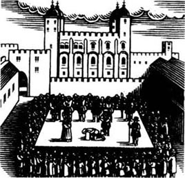
“哦，叔叔，”我说，“我们怎么能确定他们都是她的情人呢？其中一个是她哥哥呀！”
“嗯，可能他不是她的情人，”威廉叔叔说，“但我记得他们在王后房间里举行的所有那些疯狂的聚会。有时他们彻夜狂欢，又跳又笑。她是个坏女人，这一点我很确定。”
“我认为亨利相信关于安妮的这些事，是因为他想另外娶个妻子，”我说，“一个可以给他生个儿子的妻子。”
小玛格丽特怀着极大的兴趣听着我们的对话。“那么安妮死时，没有人伤心了？”她说。
“没有，很多人都很高兴呢，”威廉叔叔说，“她有很多仇敌。”然后他看着我们两个说，“但是你们为什么谈起了安妮·博伦呢？那已是很久以前的事了。”
“我在白厅发现了亨利的这个旧盒子，”我说，“里面有亨利每个妻子的来信，而且玛格丽特想了解她们的一切。”
“哪一封是安妮·博伦写的？”威廉叔叔问。他打开桌上的盒子，“我想读一下她给她亲爱的丈夫写的东西。啊，在这儿呢。1536年5月18日——这是她被处决的前一天！”
他开始大声地读这封信……
伦敦塔
1536年5月18日
亲爱的亨利：
这是我写给你的最后一封信。明天，我就要死了。当你打开这封信读它的时候，我已死去，并被埋葬了。
在过去的几周里，我的生活非常艰难。我很害怕，也十分孤独。我在屋里来回走动时，想着你。我希望你会带我离开这个可怕的监狱。但现在我知道自己要死了，反而觉得平静了。
他们告诉我，你曾说了我很多气话，说我有过上百个情人，而不仅仅是那五个因我而死的可怜人。
但是亨利，我没有情人，一个也没有，这你是知道的。我是你忠实的妻子，但你却听信我仇敌的话，把我送到这里。
我求你最后一件事。请善待我们的女儿伊丽莎白，不要因我而迁怒于她。她太小了，还不到三岁。我把这条金项链送给她，这将帮她记住我。
我的脖颈很细，所以，明天用锋利的法国刀砍断它不会是什么难事。
今晚，我将祈求上帝宽恕你。
你的妻子
安妮·博伦
“安妮第二天就被砍头了吗？”玛格丽特问。
“是的，”我说，“用一把刀砍的。在法国都是这么做的。”
“多么可怕呀！”玛格丽特叫着，握住了自己的脖子。
“嗯，我认为亨利做得对，”威廉叔叔说，“安妮·博伦一无是处，她不是个真正的王后，不像阿拉贡的凯瑟琳。”他站起来，“我得走了，”他说，“这事儿非常有趣，但我来这儿是要和你哥哥谈话的。我要去找他了。女士们，再见。”他笑着离开了屋子。
“那条项链在哪儿？”玛格丽特问。
“我找不到，”我边说边在盒子里找着，“也许亨利把它给伊丽莎白公主了，这样她偶尔看见它时，或许会想起自己的母亲。”
4. Jane Seymour
4
Jane Seymour
'People say that Princess Elizabeth is very clever,' said Margaret. 'Is that true, my lady?'
'Yes, it is. She's only thirteen years old, but she can read and write in four languages already.'
Margaret's face was sad. 'I only know one language,' she said. 'And I can't read or write it.'
'But you have a mother and father who are alive,' I said quickly. 'You don't have enemies who watch you all the time, or who want to send you far away to marry a stranger—perhaps an old man who drinks too much, and keeps a mistress!'
'Will that happen to Princess Elizabeth?' margaret asked, her eyes round.
'Perhaps. Who knows? A princess doesn't always have an easy life, you know.' I laughed. 'But Elizabeth is clever. I think she'll get what she wants in life. Now, let's go outside, while the sun is shining. We'll take the next letter with us.'
We walked down through the garden to the river. There we sat on a seat and watched the boats.
'So Jane Seymour was the third wife,' said Margaret. 'When did the King marry her?'
'Just ten days after Anne's death.'
'That was very quick!'
'Yes, Henry always knew what he wanted. And he usually wanted things immediately.'
'And was Jane the same as Anne Boleyn?'
'No, Jane was very different. She was quiet and careful. Before she married the King, she was never alone with him. Her brother Edward was always with her when the King came to visit. And Henry was pleased to see that. He didn't want another wild and dangerous wife like Anne.'
'How do you know so much about the King and his other wives?' asked Margaret.
'I have lived for many years in palaces, Margaret,' I said, smiling. 'And palaces are full of people, coming and going, talking in corners, telling secrets. If you listen, it's not difficult to learn things.'
'So was Jane a nicer person than Anne?'
'I think she was. She was very kind to Henry's daughters, Princess Mary and Princess Elizabeth. She was like a mother to both of them. Jane was clever too, and she quickly learnt to listen to Henry. She didn't try to tell him what to do. And with her brown hair and white face, she also looked very different to Anne Boleyn.'
'And what about the King at this time? Was he still handsome?'
'Oh no, he was beginning to get fat and his face was just like a big potato! Not like the picture in Whitehall Palace.'
'But was he happy?' asked Margaret.
'Yes, I think he really loved Jane. And of course, she also gave him a baby boy, who is now our King Edward.'
'A son at last for the King! But what happened to Jane? Did he get tired of her too, or was she the one who died?'
'Yes, she died soon after Edward was born.'
'How sad! She gave the King a son and then she died.'
'Let's read the letter now.' I opened it and a piece of brown hair fell out. I showed it to Margaret.
'What soft hair,' she said, touching it. 'Is it Jane's?'
'Yes, I think so.' I began to read...
Hampton Court Palace
22nd October 1537
Dear Henry
The doctors and my women tell me that I shall feel better tomorrow, but I can see in their faces that it is not true. I cannot sleep or eat, and a fire burns in my body day and night. I know that I shall soon be dead.
But I have given you a son, Henry, and I can die happy, knowing that Edward will be King after you. I will never see the day when he becomes King, but I pray that God will give him a long and happy life.
Please look after dear Edward and tell him all about me. Here is a piece of my hair—a small present from a dying mother to her baby son.
I am too ill to write more and must say goodbye.
Your loving wife and queen
Jane
I put the letter away, and looked at Margaret. 'She had a very difficult time when the baby was born, you see. It took three days and two nights before the baby arrived. Poor Jane was very tired and ill. She died twelve days later, very soon after this letter.'
'How terrible,' said Margaret. She touched the piece of Jane's hair again. 'And was the King sad?'
'Oh yes. He was very unhappy. He shut himself away in the palace for weeks. All England was sad, and every church in the country said prayers for poor Queen Jane. She was buried at Windsor, and Henry is now buried next to her.'
Just then Uncle William came up behind us.
'Ah, Uncle,' I said. 'Let's go in and have some lunch.'
stranger n. person that one does not know. 陌生人。
shine v. give out or reflect light; be bright. 发光，照耀。
alone adj. without any companions. 独自的，孤单的。
be pleased feeling or showing satisfaction or pleasure. 满意的，高兴的。
potato n. plant grown for its rounded starchy tubers which are eaten cooked as a vegetable. 马铃薯，土豆。
brown adj. having the colour of toasted bread, or coffee mixed with milk. 棕色的。
soft adj. not hard or firm to the touch. 软的，柔软的。
touch v. be or come together with (sth. else) so that there is no space between. 接触。
look after make sure that sb. is safe and well. 照顾，照料。
present n. thing given or received as a gift. 礼物。
too...to 太……而不能。
put away put sth. in a box, drawer, etc. because one has finished using it. （使用完毕）把某物收起或放入箱子、抽屉等中。
prayer n. solemn request to God or to an object of worship. 祈祷，祷告。
come up appear above the soil, arise. 长出地面；出现。
简·西摩
4．简·西摩
“据说伊丽莎白公主非常聪明，”玛格丽特说，“是真的吗，夫人？”
“是的，是真的，她只有13岁，但已经会用四种语言读书写字了。”
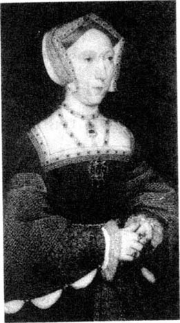
玛格丽特一脸沮丧。“我只懂一种语言，”她说，“而且既不会读也不会写。”
“但你的父母都还健在，”我急忙说，“你没有敌人时刻监视你，或者想把你远嫁给他乡的陌生人——或许会把你嫁给酗酒养情妇的老头儿！”
“伊丽莎白公主会那样吗？”玛格丽特瞪大了眼睛问道。
“可能吧。谁知道呢？一个公主并不总是能过上安逸的生活，你知道，”我笑道，“但伊丽莎白很聪明，我想她会从生活中得到她想要的东西的。现在趁着阳光明媚，咱们出去吧。带上下一封信。”
我们穿过花园来到河边，坐在一张凳子上，注视着过往的船只。
“那么简·西摩是第三任妻子，”玛格丽特说，“国王什么时候和她结婚的？”
“安妮去世后仅十天。”
“真够快的！”
“是的，亨利总是知道自己想要什么，而且他总是要立刻就得到。”
“简和安妮·博伦一样吗？”
“不，简与她很不一样。她性格文静，处世小心。嫁给国王之前，她从没和他单独在一起待过。国王来访时，她的弟弟爱德华总是跟随在她左右。亨利看到这些很高兴，他不想再娶一个像安妮那样既放荡又危险的妻子了。”
“你怎么会对国王和他那些妻子的事知道得这么多？”玛格丽特问道。
“我在王宫里生活了很多年，玛格丽特，”我笑着说，“王宫里到处都是人，来来往往，秘密交谈，窃窃私语。如果你留心听，了解这些并非难事。”
“那么简这个人比安妮好些吧？”
“我想是的。她对亨利的女儿玛丽公主和伊丽莎白公主都很好，就像她们两个的母亲。简也非常聪明，她很快就学会了听从亨利。她从不对亨利指手画脚，她棕色的头发，白皙的面庞，都使她看起来和安妮·博伦截然不同。”
“国王这时候是什么样子？他依然很英俊吗？”
“噢，不，他已开始发福，脸就像个大土豆！可不像白厅里的画像那样英俊。”
“但他高兴吗？”玛格丽特问。
“是的，我想他真的爱上了简。当然，她也给他生了个男孩，就是我们现在的爱德华国王。”
“国王终于有儿子了！但是简怎么样了？国王也厌倦她了，要不就是她死了？”
“是的，她在爱德华出生后不久就去世了。”
“多么可怜！她给国王生了个儿子，然后自己却死了。”
“咱们现在读信吧。”我打开信，一绺棕色的头发掉了出来。我把它递给玛格丽特。
“好柔软的头发，”她抚摸着头发说，“是简的吗？”
“是的，我想是的。”我开始读信……
汉普顿宫
1537年10月22日
亲爱的亨利：
医生和我的侍女告诉我，我明天会感觉好些的，但从他们的脸上可以看出，这不是真的。我既睡不着也吃不下，有团火日夜在我体内燃烧。我知道，我将不久于人世了。
但我已给你生了个儿子，亨利，我可以含笑而去了，我知道爱德华会继承你的王位。我永远也看不到他成为国王的那一天了，但我将向上帝祈祷让他长命百岁，一生幸福。
请照看好亲爱的爱德华，告诉他关于我的一切。这是我的一绺头发——算是一位弥留之际的母亲留给她儿子的小小礼物吧。
我病情太重，再也写不下去了，不得不向你说再见了。
爱你的妻子和王后
简
我把信收好，看着玛格丽特。“婴儿出生时，她很痛苦，你知道。整整折腾了三天两夜，孩子才降生。可怜的简被折磨得疲惫不堪，终于病倒了。她在写完这封信12天后就去世了。”
“多可怕呀，”玛格丽特说。她又抚摸着简的那绺头发，“国王很伤心吗？”
“哦，是的。他非常难过。他把自己关在王宫里，好几个星期都没出来。整个英格兰都沉浸在悲痛之中，国内的每个教堂都在为可怜的王后简祈祷。她被葬在温莎宫，亨利现在就葬在她的旁边。”
这时，威廉叔叔从我们身后走过来。
“啊，叔叔，”我说，“我们一起进去用午餐吧。”
5. Anne of Cleves
5
Anne of Cleves
After lunch we sat and talked for a while. Uncle William was very interested in the letters.
'So which letter are you going to read next?' he asked.
'The one from Anne of Cleves,' I replied.
'Oh yes, Henry's ugly wife. When I first saw her, I thought she looked just like a horse! And the King thought that too!'
'A horse?' said Margaret. 'So how did she become the King's wife?'
'It's a long story. Do you want to hear it?'
'Yes, please,' said Margaret, smiling.
'Well, after poor Queen Jane died, Henry was very sad and lonely. He wanted a new wife, and he wanted a second son. Children can die at any time, and Edward wasn't strong. So everybody looked for a beautiful young woman to be the new Queen. Then someone told Henry about Anne of Cleves, a German Princess. They said that she was beautiful, young, and clever. And at that time the King wanted to please the Germans, because he was angry with the French. That all changed later, of course.
'Henry couldn't go and see Anne for himself, so he sent his artist Holbein to paint a picture of her. Holbein painted a fine picture of Anne and sent it back to Henry. Henry immediately fell in love with the beautiful woman in the picture and decided to marry her. So Anne sailed to England, and on her way to London she stopped for the night at a small town called Rochester. Henry couldn't wait for Anne to arrive in London so he travelled secretly to Rochester to meet her. She knew nothing about this.
'When Henry arrived at her house, he wasn't wearing his fine clothes and he didn't look like a king. He knocked on the door and went into her room. Oh dear! Poor Henry was very surprised. This wasn't the beautiful woman in the picture. She had a sad face and a long nose, and she wasn't very interested in this strange man. He didn't tell her his name, and she didn't understand that this was her new husband. What a terrible mistake!
'Poor Henry went away to put on his fine clothes, and came back looking like a real king. Anne now saw that this strange man was her new husband. Henry kissed Anne and said his name. Poor Anne smiled at him, but she couldn't speak any English so she stayed silent. After a few minutes Henry left. He was really unhappy. His new wife wasn't beautiful, and she couldn't say a word to him!'
'Oh dear,' said Margaret. She was enjoying this story very much. 'What happened next?'
'Well, Henry decided that he really didn't want to marry Anne. Where was the beautiful young woman in the picture? He wanted her! But he couldn't change things. He had to marry ugly Anne.'
'And did the King learn to love her?' asked Margaret.
'No, he didn't. He wanted to divorce her.'
'And did he?'
'Yes, after six months.'
'How did he do that?'
'Well, he learned that in her country Anne was engaged at one time to marry another man.'
'And so he divorced her?'
'Yes, poor Anne was only Queen for six months.'
'And they didn't have any children, did they?'
'No, Henry didn't sleep with Anne.'
'But what happened to her? Is she still alive?'
'Oh yes. But let's read her letter and see what she says.'
'Perhaps it's a love letter,' said Margaret.
'If it is, I'm sure that she never got a reply!' said Uncle William, laughing. He opened the letter and began to read.
Palace of Richmond
20th July 1540
Dear Henry
You are a very good brother to me! Thank you for giving me five hundred pounds a year and the Palace of Richmond. I spend hours walking round the gardens here—the trees and flowers are wonderful.
I have decided that I shall not go back to my country. I have thought about it carefully, and I know now that England is my real home. I feel so happy here. How can I leave all my dear English friends and my beautiful garden?
Come and visit me soon, dear brother.
Your loving sister
Anne
'She sounds really happy,' said Margaret, surprised.
'I think she is,' said Uncle William. 'She didn't make trouble for the King about her divorce, so he was pleased with her. And then, of course, he was free to marry his next wife.'
'The fifth one,' said Margaret. 'And who was she?'
'Catherine will tell you all about her. I must leave you now, ladies.' He stood up, and came to kiss me goodbye.
'Goodbye, Uncle,' I said. 'Come again soon.'
'Oh, I will, I'd like to read the rest of those letters.' He looked at Margaret. 'Be good, young lady.' He smiled at us both and left the room.
reply v. say or make an answer. 回答。
ugly adj. unpleasant to look at or to hear. 丑陋的。
at any time 随时。
paint v. make (a picture) using paints; portray. 画像。
sail v. travel on water in a ship, yacht, etc. using sails or engine power. （乘船或游艇等）作水上旅游。
on one's way to in the process of going to. 在去……的路上。
secretly adv. kept or intended to be kept from the knowledge or view of others; not known by others. 秘密地。
wear v. have (sth.) on one's body, esp. as clothing, as an ornament, etc. 穿戴，佩带。
put on clothe oneself with (a garment). 穿上（衣服）。
be engaged in (of a person or two people) having agreed to marry. （指一人或两人）已订婚。
at one time at some period in the past. 一度。
spend doing/ on sth. use (time, etc.) for a purpose. 在某事上花时间。
surprised adj. experiencing or showing a feeling of surprise. 惊讶的，诧异的。
be good 好好的，别淘气。
克利夫斯的安妮
5．克利夫斯的安妮
午饭后，我们坐下来闲谈了一会儿。威廉叔叔对那些信很感兴趣。
“下面要读哪一封信了？”他问道。
“克利夫斯的安妮写的那封。”我答道。
“噢，是的，亨利丑陋的妻子。我第一次见到她时，觉得她长得就像匹马！国王也那么认为！”
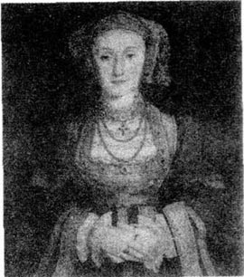
“像匹马？”玛格丽特说，“那她怎么成了国王的妻子呢？”
“说来话长。你想听吗？”
“是的，请讲一下吧。”玛格丽特笑着说。
“嗯，可怜的王后简去世后，亨利非常难过，也特别孤独。他想要个新的妻子，还想再要个儿子。孩子随时都可能夭折，而且爱德华的身体并不壮。所以每个人都期盼着能有一个年轻漂亮的女人成为新王后。这时，有人对亨利提到了克利夫斯的安妮，她是一位德国公主。他们说她既年轻漂亮，又聪明伶俐。那时国王正想取悦德国，因为当时他和法国的关系很不友好。当然后来一切都改变了。
“亨利不能亲自去看安妮，就派了他的画家霍尔拜因去给她画一幅像。霍尔拜因给安妮画了幅很漂亮的画像，送给了亨利。亨利立刻爱上了画中这位美貌的女人并决定娶她为妻。所以安妮乘船去了英格兰，在前往伦敦的途中，她在一个叫罗切斯特的小镇上停了一夜。亨利已迫不急待了，他不等安妮到达伦敦，就秘密地去罗切斯特见她，而她对此却一无所知。
“亨利到达她的住所时，他穿着朴素，看起来并不像个国王。他敲门走进了她的屋子。哦天啊！可怜的亨利惊呆了。这并不是画上那个美丽的女人。她一脸苦相，鼻子很长，而且她对这个陌生男人并不感兴趣。他没有告诉她自己的名字，她也不知道这就是自己未来的丈夫。多么可怕的错误啊！
“可怜的亨利穿戴整齐又回来了，这次他看起来才真正像个国王。安妮现在才明白这个陌生人就是她未来的丈夫。亨利吻了安妮，说出了自己的名字。窘迫不已的安妮朝他微笑着，但她一句英文也不会说，只能沉默不语。几分钟后亨利就离开了。他非常不悦。他的新妻子非但不漂亮，而且一句话都不能跟他说！”
“哦天呐，”玛格丽特说，她非常喜欢这个故事，“后来呢？”
“嗯，亨利很不愿意娶安妮为妻。画中那个美貌的女人哪儿去了？他想要她！但他无法改变现实。他不得不和丑陋的安妮结婚。”
“国王有没有试着去爱她呢？”玛格丽特问。
“不，他没有。他总想着和她离婚。”
“离了吗？”
“离了，六个月后。”
“他怎么离的婚？”
“嗯，他得知安妮在德国时曾一度和另外一个人订了婚。”
“所以他就和她离婚了？”
“是的，可怜的安妮只当了六个月的王后。”
“他们没有孩子，是吧？”
“没有，亨利从未和她同床共枕。”
“但她怎么样了呢？仍然健在吗？”
“哦，是的。咱们读一下她的信，看她说些什么。”
“可能这是封情书。”玛格丽特说。
“如果是的话，我肯定她从未得到过回音！”威廉叔叔大笑着说。他打开信开始读了起来。
里士满宫
1540年7月20日
亲爱的亨利：
对我来说，你真是个好哥哥！谢谢你每年给我500英镑，并让我住在里士满官。我每天花很多时间在花园里散步——这儿的树和花漂亮极了。
我已决定不回德国了。我仔细考虑过，知道现在英格兰才是我真正的家。我在这儿很快乐。我怎么舍得离开我亲爱的英格兰朋友们和这美丽的花园呢？
亲爱的哥哥，快来看看我吧。
爱你的妹妹
安妮
“听起来她真的很快乐。”玛格丽特惊讶地说。
“我想是的，”威廉叔叔说，“国王和她离婚，她没有找任何麻烦，所以他对她很满意。随后，当然，他就可以自由地去娶下一位妻子了。”
“第五个妻子，”玛格丽特说，“她是谁呢？”
“凯瑟琳会把她的一切都告诉你的。我现在必须走了，女士们。”他站起身来，过来和我吻别。
“再见，叔叔，”我说，“希望很快又能再见到你。”
“哦，我会来的，我很想读一下其余的信。”他看着玛格丽特，“别淘气，年轻的女士。”他朝我们两个人笑了笑，就离开了房间。
6. Katherine Howard
6
Katherine Howard
I took the last letter out of the box and held it in my hand while I answered Margaret's questions. She wanted to know everything.
'And who was the King's fifth wife?' she asked.
'Katherine Howard.'
'Why did the King want to marry again?'
'He still wanted to have another son, you see. A brother for Prince Edward.'
'And how did he meet Katherine?' asked Margaret.
'She was one of the ladies at Queen Anne's palace, so Henry knew her already. She was only eighteen. Henry fell in love with her immediately. He called her "his beautiful flower" and sent her many expensive presents—gold and jewels and fine dresses.'
'But did she want to marry him?'
I smiled. 'If the King of England wants to marry you, how do you say no? Henry was very much in love and he wanted to marry her immediately. The Howard family is an old and famous one, and they were very happy for Katherine to marry the King.'
'Was he happy with his new Queen?'
'Yes,' I said. 'At first. She was young, beautiful, and exciting. Very different from Anne of Cleves.'
'And did she learn to love the King?'
'Who can say? But I don't think so. Henry was forty-nine, thirty years older than her. He was very, very fat and heavy. His face was more like a potato than ever, and his eyes were always half-closed. He had a very bad leg and often couldn't walk—and he was always angry when his leg hurt.'
Margaret looked at the letter in my hand. 'I don't think that I would like to marry a fat old man with a bad leg who couldn't walk!' she said.
I laughed. 'But the King's wife, remember, was also the Queen of England, the first lady in the country.'
'Yes, that's true,' said Margaret. 'And did they have a son?'
'No, they didn't. They weren't married for very long. Before Katherine married Henry, she had lovers. Henry didn't know this. He thought that he was Katherine's first lover. And about six months after Katherine married Henry, she began to see another man called Thomas Culpeper. He was tall and handsome. Katherine wrote love letters to him, and they met secretly at night.'
'What a dangerous thing to do!' said Margaret. 'Katherine wasn't very clever, I'm afraid.'
'And people saw her and began to talk about it, and somebody told the King... One of his friends wrote it all down in a letter, and put the letter into Henry's hand when he was in church.'
'Oh dear,' said Margaret. 'So then...' Already she knew what happened next.
'Yes,' I said. 'Henry was wildly angry. He talked, people say, about taking a sword and cutting off her head himself. But he sent Thomas Culpeper to prison, and soon after he sent Katherine to the Tower.'
'Like Anne Boleyn, years before,' said Margaret.
'Let's see what her letter says,' I said, opening it. 'The writing is very untidy—I think she wrote this in a hurry.'
Tower of London
11th February 1541
Dear Henry
Please forgive me! I didn't want to make you unhappy and angry. Believe me!
It's true that when I was a young girl, I was friendly with different young men. I was so young and stupid. I also spent a lot of time with Thomas Culpeper when I was your wife. But believe me, Henry, I didn't know what I was doing. Remember, I am only twenty years old now. You are so much older than me, and you understand much more about the world.
Please, Henry, please, please help me! Don't send me to my death! I am so afraid here in the Tower—I pray day and night that you will come and take me away. How can you kill your beautiful flower? They tell me that in two days' time they will cut off my head... Henry, I don't want to die! Please let me live a little longer... please! Just a few weeks... a few days... Please, Henry, please...
Your unhappy wife
Katherine Howard
When I finished reading the letter, Margaret was silent. Perhaps she could hear Katherine Howard's cries and see her white face.
I put the letter away, and Margaret looked at me.
'There aren't any more letters, are there?' she said.
'No,' I said. 'That was the last letter.'
expensive adj. costing a lot (of money). 昂贵的。
jewel n. ornament with precious stones set in it. 镶有宝石的装饰品。
exciting adj. causing great interest or enthusiasm. 令人激动的。
hurt v. feel or cause pain. 感到或引起疼痛。
write down put sth. down in words on paper. 将某事写在纸上。
cut off remove sth. (from sth. larger) by cutting. 砍下，割下。
untidy adj. not neat or orderly. 不整齐的，凌乱的。
in a hurry quickly, hastily. 匆忙地。
stupid adj. showing lack of good judgement; foolish. 愚蠢的，傻的。
凯瑟琳·霍华德
6．凯瑟琳·霍华德
我回答玛格丽特的问题时，把最后一封信从盒子里拿出来，握在手里。她什么都想知道。
“谁是国王的第五任妻子？”她问道。
“凯瑟琳·霍华德。”
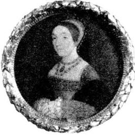
“国王为什么又想结婚呢？”
“他还想再要个儿子，你知道。给爱德华王子作弟弟。”
“他是怎么遇到凯瑟琳的？”玛格丽特问。
“她是安妮王后宫里的一位贵族小姐，所以亨利早就认识她了。她那时只有18岁，亨利立刻就爱上了她。他把她称作是‘他美丽的花朵’，并送给她很多贵重的礼物——金银珠宝和漂亮的衣服。”
“但是她愿意嫁给他吗？”
我笑了。“如果英格兰国王想要娶你，你又怎么能拒绝呢？亨利深深地爱着她并想马上和她结婚。霍华德家族是个名门望族，而且他们很愿意凯瑟琳嫁给国王。”
“他对他的新王后满意吗？”
“是的，”我说，“一开始是这样的。当初她年轻美貌，惹人喜爱，与克利夫斯的安妮截然不同。”
“那她试着去爱国王了吗？”
“谁知道呢？但我想没有。亨利那时已经49岁了，比她大30岁。他极其肥胖，而且很笨重。他的脸比以前更像土豆，眼睛也总是半闭着。他有一条腿不太灵便，经常无法行走——腿痛发作时他总是暴跳如雷。”
玛格丽特看着我手中的信。“我想我不会愿意嫁给一个又肥又老，且有一条腿行动不便的男人的！”她说。
我笑道：“别忘了，国王的妻子就是英格兰的王后，也就是国家的第一夫人。”
“是的，确实是这样，”玛格丽特说，“他们有儿子吗？”
“不，他们没有。他们结婚的时间并不长。凯瑟琳嫁给亨利之前，已经有了几个情人。亨利并不知道这个，他以为他是凯瑟琳的初恋情人。凯瑟琳嫁给亨利大约六个月后，她就开始和另一个叫托马斯·卡尔佩珀的男人约会。他高大而英俊，凯瑟琳给他写情书，而且他们在夜里私会。”
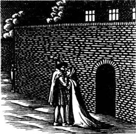
“做这事儿可太危险了！”玛格丽特说，“恐怕凯瑟琳不太明智。”
“人们看见了她，并开始议论起来，后来有人把此事告诉了国王……他的一个朋友把这一切都写在了信上，趁亨利在教堂时，把信塞到了他的手里。”
“哦天呐，”玛格丽特叫道，“那么后来……”她已猜到后面发生的事了。
“是的，”我说，“亨利勃然大怒。据说，他扬言要用刀亲自把她的头砍下来。但后来他把托马斯·卡尔佩珀打入监牢，随后不久又把凯瑟琳送进了伦敦塔。”
“和几年前安妮·博伦一样。”玛格丽特说。
“咱们看看她信上说些什么，”我打开信说道，“信写得非常潦草——我想她写的时候一定很匆忙。”
伦敦塔
1541年2月11日
亲爱的亨利：
请原谅我！我没想让你不悦并惹你生气。相信我！
当我还是个少女时，的确和各种各样的年轻男子交往密切。我当时太小了，什么都不懂。和你结婚后，我也确实和托马斯·卡尔佩珀度过了很多时光。但是相信我，亨利，我不知道自己在做什么。想想看，我现在只有20岁。你比我年长很多，比我更了解世事。
求求你，亨利，求你了，求你救救我！不要让我去死！我在塔里很害怕——我整日祈祷，希望你能来把我带走，你怎么可以杀死你美丽的花朵呢？他们告诉我，会在两天内把我处死……亨利，我不想死！请让我再多活一段时间吧……求求你了！哪怕仅有几星期……几天……求求你，亨利，求求你……
你不幸的妻子
凯瑟琳·霍华德
我读完这封信时，玛格丽特沉默了。她好像听到了凯瑟琳的哭喊，看到了她苍白的脸。
我把信收了起来，玛格丽特看着我。
“没有信了，是吗？”她说。
“没有了，”我说，“那是最后一封。”
7. Catherine Parr
7
Catherine Parr
We sat silently for a while. Outside it was beginning to get dark. Margaret looked at the floor, then at her hands, then at the floor again. I waited. I knew what she was thinking. Then suddenly she looked at me, and the questions came all at once.
'How could you do it, my lady? How could you marry that terrible man? Weren't you afraid? Why didn't you hide... or... or run away?'
I smiled at her. 'Listen to the full story, and then perhaps you'll understand. I was very different to Henry's other wives. I was thirty-one years old and Henry was my third husband. My first two husbands were old men too. They both died and I didn't have any children with them. But Herny didn't really want a wife, Margaret. He wanted a friend, and a nurse, and a mother for his three children.'
'Oh, I see,' said Margaret slowly. 'He wanted someone to look after him. So how did it all happen, then?'
'It began at a party at Hampton Court Palace. I remember it very well. While I was dancing with my friend Thomas Seymour, I turned round and saw Henry. His blue eyes were watching me. He was too ill to dance, but later that evening he asked to talk with me. I was a little afraid. I knew so many different stories about him. He was one of the most famous kings in Europe, and he was also famous for killing people who made him angry—Anne Boleyn, Katherine Howard, and many, many others. And of course, he was also very fat and ugly!
'After that evening he began to send me presents, and he asked me to visit him at Hampton Court Palace.
'At this time I was friendly with Thomas Seymour. He was a fine young man and I was in love with him. We talked about getting married. Then I got a letter from King Henry. He wanted to marry me. What could I do? I loved Thomas, but my family wanted me to be the Queen of England. And in the end, I had to marry Henry.'
'But were you happy?' asked Margaret.
'Well, sometimes I was. I loved being Queen. I had beautiful clothes and expensive jewels. But it was also very difficult at times. Henry was often ill with his bad leg, and when his leg hurt, he became angry and shouted at me. Once he nearly sent me to the Tower. I said something about the Church of England, and he didn't agree with me and got very, very angry. He didn't say anything then, but a few days later his soldiers came to take me away.'
'Oh no!' said Margaret. 'What did you do?'
'I cried and cried. I told him that I agreed with his every word, and that he was my teacher and I was only a stupid woman. And then I cried some more, and said I didn't understand anything about the church. I only talked to help him forget his bad leg.'
'And was that true?' asked Margaret.
'Of course not! But I had to say something, and after that we were friends again.'
'So you didn't love him.'
'No, I didn't, but I learned to like him some of the time. He was a clever and interesting man—and he was the King of England!'
'And what about his three children?'
'I felt sorry for them. They had a difficult and lonely life. I tried to be a good mother to them all. I was friendly with Princess Mary, played games with Elizabeth and young Edward, and helped them with their studies in different languages. Of course, Henry and I didn't have any children together.'
Suddenly there was a knock at the door. 'Come in!' I called. A young man walked into the room. He was holding some beautiful red and gold flowers.
'These are for Catherine Parr,' he said.
'For me?' I said. 'Who are they from?'
'There's a note here.' He gave me a piece of paper, smiled, and left the room.
I read the note quickly.
Dear Catherine, you are my true love. You are my flower. I think of you every hour. I wait for you. Tom.
'What does it say?' asked Margaret.
'I can't tell you,' I laughed.
'But who are the flowers from?'
'Thomas Seymour.'
'Oh, the young man who wanted to marry you before. Does he still love you? Are you going to marry him?'
'I don't know, Margaret. Henry only died three weeks ago.' I was silent for a minute. and then I said, 'It's true, I still like Thomas. I often think about him. Some people say he's only interested in two things: women and money. But I don't believe them. He has enemies, you see, because he comes from a famous family. Jane Seymour was his sister, so Thomas is one of King Edward's uncles.'
'Will Edward be a good king, do you think?' asked Margaret.
'Yes, I think so. He's a very clever child. He often writes me letters in different languages, and he's only nine years old. But I'm worried about him because he's often ill. England needs a strong king. Henry was a bad husband, but he was a strong King of England. If Edward dies, who knows what will happen?'
It was dark outside now. I looked at Margaret and said, 'So, now you have heard all about King Henry and his six wives, and one day you can tell the story to your children and your grandchildren.'
'I think that people will always remember King Henry because of his six wives,' said Margaret. She opened the box and took out the letters. She looked at them, putting them back one by one into the box.
'Divorced—beheaded—died—divorced—beheaded.' she closed the box and looked at me. 'And still alive!'
We both laughed.
'What are you going to do with the letters, my lady?'
'Nothing, Margaret. It will he our secret.'
♣ ♣ ♣
Catherine Parr married Thomas Seymour in May 1547, a few months after Henry's death. They were married for fifteen months. Catherine had a baby girl called Mary, but six days after the baby was born, Catherine died. After her death, Thomas Seymour tried to become Princess Elizabeth's lover. He was beheaded because of this.
King Edward was often ill, and he died just before his sixteenth birthday. Then Mary, Katherine of Aragon's daughter, became Queen. She was Queen for five years. She married Philip of Spain, but did not have any children. Mary was a strong Catholic and she killed many people who were not Catholics.
Next, Elizabeth, Anne Boleyn's daughter, became Queen. She was Queen of England for forty-five years. This was the time of Shakespeare and Sir Walter Raleigh. Elizabeth was a very great Queen, but she never married, and had no children, Henry married six times because he wanted a son—and he wanted his son and his son's sons to be Kings of England after him. But when Queen Elizabeth died, King Henry's family came to an end, and a Scottish King became King of England.
all at once suddenly. 突然。
turn round (cause sb./ sth. to) face in a different direction. （使某人或某物）面向另一个方向。
friendly adj. of a relationship in which people treat each other as friends. 融洽的。
at times sometimes. 有时，间或。
agree with be in harmony (with sb.); have or form a similar opinion (as sb.). 赞成，（与某人）意见一致。
note n. short letter. 便条，短信。
think about recall sb. or sth. 想起某人某事。
come to an end finish. 结束。
凯瑟琳·帕尔
7．凯瑟琳·帕尔
我们默默地坐了片刻。外面，天渐渐地暗了下来。玛格丽特的目光一会儿盯着地板，一会儿看着她的手，一会儿又回到了地板上。我等待着。我知道她在想什么。突然她看着我，问题一下子全都涌了出来。
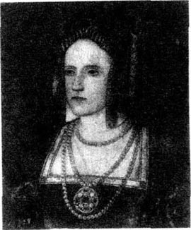
“你怎么会那么做呢，夫人？你怎么能嫁给那个可怕的男人呢？难道你不害怕吗？你为什么不躲起来……或者……或者跑掉呢？”
我朝她笑了笑。“听我把故事讲完，也许你就会明白的。我和亨利的其他妻子很不一样。我31岁了，亨利是我的第三任丈夫。我的前两位丈夫年龄也很大。他们都去世了，我也不曾跟他们有过孩子。但亨利并不真想要一个妻子，玛格丽特。他想要的是一个朋友，一个护士，一个可以做他三个孩子的母亲的女人。”
“噢，我明白了，”玛格丽特慢慢地说，“他想找个人来照顾他。那么，这一切又是怎么发生的呢？”
“那开始于汉普顿王宫的一次聚会上。我记得非常清楚。我和我的朋友托马斯·西摩跳舞时，一转身，看见了亨利。他的一双蓝眼睛正注视着我。他已经病得不能跳舞了，但后来，就在那天晚上，他邀请我谈话。我有点儿害怕。我听说过他许多不同的故事。他是欧洲最有名的国王之一，他也以处决惹他生气的人而闻名——安妮·博伦，凯瑟琳·霍华德，还有其他许许多多的人。当然，他还又丑又胖！
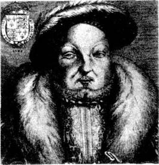
“自那晚之后，他就开始给我送礼物，他还请我去汉普顿王宫看他。
“这时我正和托马斯·西摩交往密切。他是个优秀的年轻人，我和他相爱了。我们已开始谈婚论嫁。这时我收到亨利国王的来信，他说他想娶我。我能怎么办呢？我爱托马斯，但我的家人想让我成为英格兰王后。最后，我不得不嫁给亨利。”
“但你高兴吗？”玛格丽特问。
“唔，有时我很快乐。我喜欢做王后。我有漂亮的衣服，珍贵的珠宝。但有时又感觉非常不易。亨利的病腿经常犯病，腿疼时，他就变得很暴躁，对我大喊大叫。有一次，他差点儿把我也送进伦敦塔。我说起一些关于英格兰国教的事情，他不同意我的看法，而且非常非常生气。当时他并没有说什么，但几天后他的卫兵就要把我带走。”
“哦，不！”玛格丽特大声叫道，“那你怎么办了？”
“我不停地哭喊着。我告诉他我赞成他的每一句话，他是我的老师，而我只是一个愚蠢的女人。然后我又哭诉着，说我对宗教一无所知，我只是想说些什么以帮他忘记自己腿部的疼痛。”
“那是真的吗？”玛格丽特问道。
“当然不是！但我必须说些什么，那以后我们又和好了。”
“那么说你并不爱他了。”
“是的，我不爱他，但有时我试着去喜欢他。他是个聪明而又有趣的人——还有，他是英格兰的国王！”
“他的三个孩子呢？”
“我很同情他们，他们都过着艰难而孤独的生活，我尽力去做他们的好母亲。我对玛丽公主很好，也和伊丽莎白和小爱德华做游戏，并帮助他们学习各国语言。当然，亨利和我并没有我们自己的孩子。”
突然传来了敲门声。“请进！”我大声应道。一个年轻人走了进来，手里拿着一束漂亮的红色和金黄色的花。
“这是给凯瑟琳·帕尔的。”他说。
“给我的？”我说，“谁送的？”
“这儿有张便条。”他递给我一张纸，笑着离开了。
我很快地看了一下便条。
亲爱的凯瑟琳，你是我的真爱，你是我的花朵，我时刻都在想念着你。我等你。汤姆。
“便条上写了些什么？”玛格丽特问。
“我不能告诉你。”我笑道。
“可这些花是谁送的呢？”
“托马斯·西摩。”
“噢，那个以前想娶你的年轻人。他依然爱你吗？你打算嫁给他吗？”
“我不知道，玛格丽特。亨利三个星期前才去世。”我沉默了片刻，然后说道，“真的，我仍然喜欢托马斯。我经常想起他。有人说他只对两样东西感兴趣：女人和金钱，但我不相信。他有敌人，你知道，因为他出身名门。简·西摩是他姐姐，所以托马斯是爱德华国王的一个舅舅。”
“你认为爱德华会成为一个好国王吗？”玛格丽特问。
“是的，我想他会的。他是个非常聪明的孩子，经常用不同的语言给我写信，而且他只有九岁。但我为他担心，因为他经常生病。英格兰需要一个身体强壮的国王。亨利不是一个好丈夫，但他是英格兰一个很有魄力的国王。如果爱德华死了，谁知道会发生什么事呢？”
现在外面已经全黑了。我看着玛格丽特说：“现在你已听完了亨利国王和他六个妻子的全部故事，将来你可以把这个故事告诉给你的子孙们。”
“我想人们会永远因为亨利国王有六个妻子而记住他的。”玛格丽特说。她打开盒子，把所有的信都拿了出来。她看了看它们，又一封一封地放回到盒子里。
“离婚的——砍头的——去世的——离婚的——砍头的，”她盖上盒子看着我，“依然活着的！”
我们都笑了起来。
“夫人，你打算把这些信怎么办呢？”
“什么也不干，玛格丽特。这将是我们的秘密。”
♣ ♣ ♣
1547年5月，也就是亨利去世几个月后，凯瑟琳·帕尔嫁给了托马斯·西摩。他们的婚姻维持了15个月。凯瑟琳生了个女儿，取名玛丽，但孩子出生六天后，凯瑟琳就去世了。她死后，托马斯·西摩竭力想成为伊丽莎白公主的情人，他因此被处死了。
爱德华国王经常生病，在他16岁生日前夕不幸夭折。后来玛丽，也就是阿拉贡的凯瑟琳的女儿，做了女王。她在位五年。她嫁给了西班牙的菲利浦，但他们从未生育。玛丽是个狂热的天主教徒，她杀死了很多非天主教徒。
再后来，伊丽莎白，即安妮·博伦的女儿，做了女王。她统治英格兰达45年之久。这正是莎士比亚和沃尔特·雷利爵士的时代。伊丽莎白是位非常伟大的女王，但她终生未嫁，也未生育。亨利结了六次婚，就是想要个儿子——他希望他的子孙后代都能继他之后成为英格兰国王。但当伊丽莎白女王去世后，亨利国王的家族也走到了尽头，一位苏格兰国王统治了英格兰。
ACTIVITIES: Before Reading
ACTIVITIES
Before Reading
1．Read the story introduction of the book. How much do you know now about the story? Tick one box for each sentence.
1) Henry Ⅷ died in 1547.
YES □／NO □
2) Henry was a good husband.
YES □／NO □
3) Henry's wives were all happy.
YES □／NO □
4) Many fathers didn't want their daughters to marry Henry.
YES □／NO □
5) Two of Henry's wives were called Anne.
YES □／NO □
6) Three of Henry's wives were beheaded.
YES □／NO □
7) Katherine of Aragon was Henry's wife for a long time.
YES □／NO □
8) Katherine of Aragon died at home with her friends and family.
YES □／NO □
9) Catherine Parr died before Henry.
YES □／NO □
10) In the Palace of Whitehall, there was a box of old letters from Henry's first five wives.
YES □／NO □
2．What happened to the first five Queens? Can you guess?
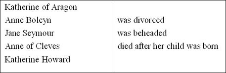
3．Which words do you think you will find in this story? Put a tick next to them. Why won't you find all of them?
| princess | England | letter | photograph |
| president | horse | telephone | London |
| queen | car | gun | New York |
| pop star | tennis | sword | apartment |
| Italy | cycling | painting | palace |
4．This story about Henry VIII happens in England in the 1500s. How do you think life was different then?
1) Could the King always do what he wanted?
YES □／NO □／PERHAPS □
2) Was it important for the King to have a lot of children?
YES □／NO □／PERHAPS □
3) Was it important for the King to have a son?
YES □／NO □／PERHAPS □
4) Could women do the same things as men?
YES □／NO □／PERHAPS □
5) Could the King kill his enemies?
YES □／NO □／PERHAPS □
ACTIVITIES: While Reading
ACTIVITIES
While Reading
1．Read Chapter 1. One of Margaret's friends has helped her to write a letter to her mother. Use these words from the story to complete the letter. (Use each word once.)
handsome, necklace, letters, tomorrow, young, box, wives, tennis, old, yesterday, fat, hair
Dear Mother
______ I went to Whitehall Palace with my lady Catherine Parr. We found a ______ with a large gold H on the top. Inside, there were ______ from Henry's first five ______. There was also a beautiful gold ______ and a piece of ______.
Catherine Parr told me all about King Henry. When he was ______, he was very ______ and he liked horse riding and playing ______. But when he was ______, he became very ______.
We're going to read all the letters ______. I can't wait! I'll write again soon and tell you all about them.
Your loving daughter
Margaret
2．Read Chapters 2 and 3. Which words or phrases from the story go best with each wife? The first one is done for you.
wonderful black eyes, divorced, beheaded, wild and dangerous, twenty-four years, three and a half years, Princess Elizabeth, Princess Mary, Spain, a witch. Henry's brother Arthur, six. fingers, Tower of London, a sword, a gold cross
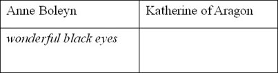
3．Read Chapters 4 and 5. Then answer these questions.
Who
1) ...could read and write in four languages when she was thirteen?
2) ...was quiet and careful?
3) ...was fat with a face like a big potato?
4) ...died soon after her son was born?
5) ...looked like a horse?
6) ...painted a picture for Henry?
7) ...couldn't speak English?
8) ...gave Anne of Cleves the palace of Richmond?
4．Read Chapter 6. Are these sentences true (T) or false (F)?
1) Henry was eighteen years older than Katherine Howard.
2) Henry gave Katherine Howard expensive clothes and jewels.
3) Henry married Katherine because he wanted another daughter.
4) Henry was now very fat and ugly.
5) Katherine Howard had lovers before she married Henry.
6) Anne of Cleves told Henry about Katherine Howard and Thomas Culpeper.
7) Katherine Howard was a clever woman.
5．Before you read Chapter 7, can you guess the answers to these questions?
1) Catherine Parr was Henry's last wife. Why did she marry him?
2) Was Catherine Parr happy when she was married to Henry?
3) What was the King like at this time?
4) Was Catherine Parr kind to Henry's children, Mary, Elizabeth and Edward?
5) After Henry died, did Catherine Parr marry again?
6) Who was the next King or Queen of England after Edward Ⅵ?
ACTIVITIES: After Reading
ACTIVITIES
After Reading
1．Find the answers to this crossword in the story.
ACROSS
1) Katherine Howard was much ______ than Henry. (7)
3) Anne Boleyn felt like this the day before she died. (4)
5) Anne Boleyn and Katherine Howard died here. (5, 2, 6)
7) Anne Boleyn was beheaded with this. (5)
9) Holbein's job. (6)
10) Anne Boleyn sent Henry a ______ for Elizabeth. (8)
DOWN
1) Henry wore ______ when Katherine of Aragon died. (6)
2) Catherine Parr found these in a box. (7)
3) Henry broke with the ______ Church in Rome. (8)
4) Henry married six times because he wanted a ______. (3)
6) Thomas Culpeper was Katherine Howard's ______. (5)
8) Margaret's job. (4)
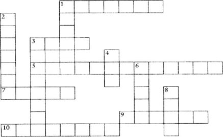
2．Do you agree (A) or disagree (D) with these sentences about Henry and his wives?
1) The King was right to divorce Katherine of Aragon. She couldn't have any more children and he needed a son. A king must think of his country first, before his family.
2) Anne Boleyn is the most interesting of Henry's wives. She wasn't a witch; she was just born at a time when women had to be quiet and do what men said. Today, she would be a very good wife for a king or president.
3) Henry only loved Jane Seymour because she gave him a son.
4) Anne of Cleves was the luckiest of Henry's wives.
5) Katherine Howard was too young to marry the King. It was terrible that she was beheaded at the age of twenty.
6) Catherine Parr was stupid to marry the King when he was fat, ugly, and ill.
7) It was more important for England to have a strong king than for Henry's wives to have a good husband.
3．Imagine that Mary, Elizabeth, and Edward are talking about their mothers. Who is speaking, and about which mother?
1) 'I can just remember my mother's long hair.'
2) 'I only know my mother from pictures of her.'
3) 'When my mother was dying, I wanted to be with her, but the King said no.'
4．Read this text about the life of Henry VIII. Can you find and correct the ten mistakes in it?
Henry Ⅷ, King of France, was a tall and ugly young man, who liked horse riding, football and playing music. He wrote many beautiful songs and had a wonderful singing voice.
When he was older. he became very thin. He had a very bad leg, and often couldn't walk. And when his leg hurt, he was always angry.
He married seven times because he wanted a daughter to be Queen after him. His one son, Edward VI, died just before he was thirty.
Henry VIII is famous in England's history because he broke with the Pope and the Catholic Church, and started the Church of America.
In 1587 he became very ill and died. His three children, Edward, Mary and Elizabeth, all became King and Queen after him. None of them had any children so Henry's family came to an end.
5．Write a short text about a famous person (a king, queen, president, etc.) from your own country. Use some of these words to help you.
was born in / lived in / When he / she was young / old liked / married... / had...children is famous because / died in / After his / her death
封底
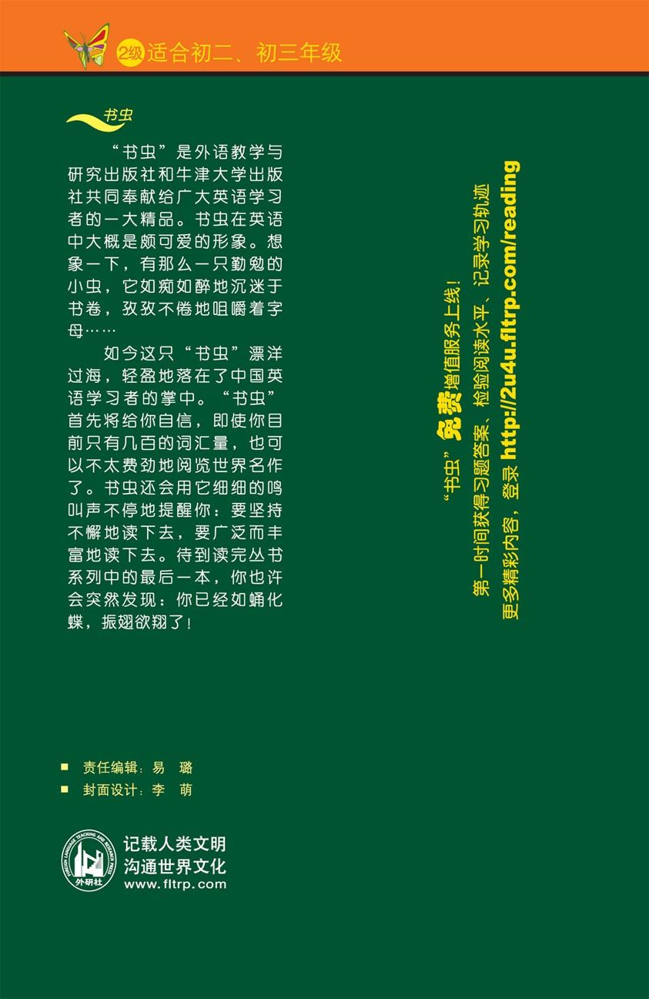